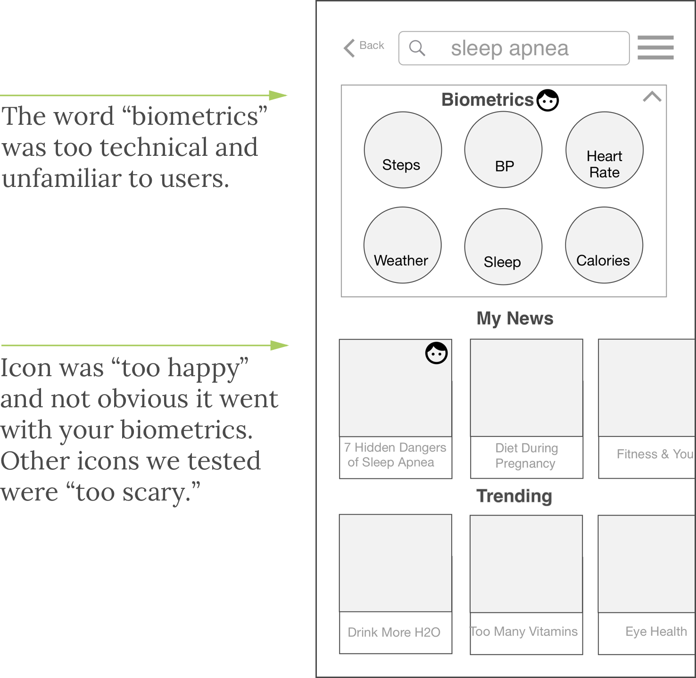
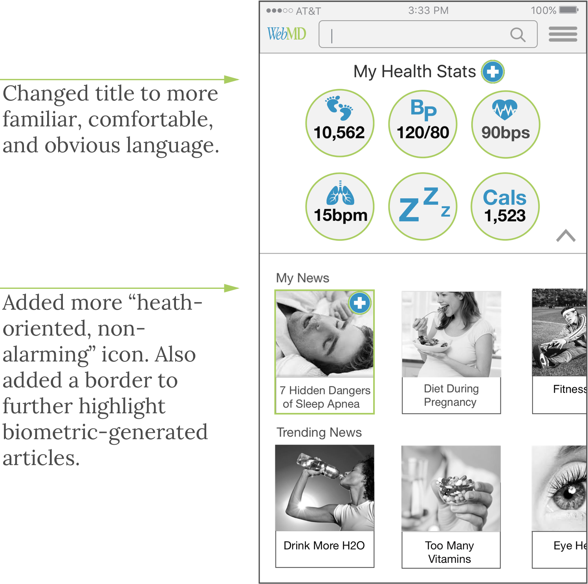
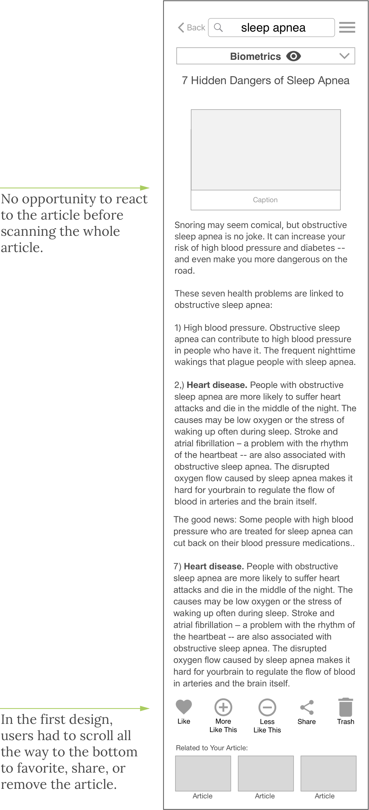
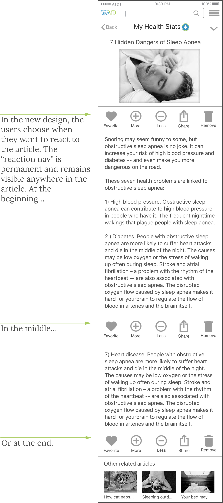
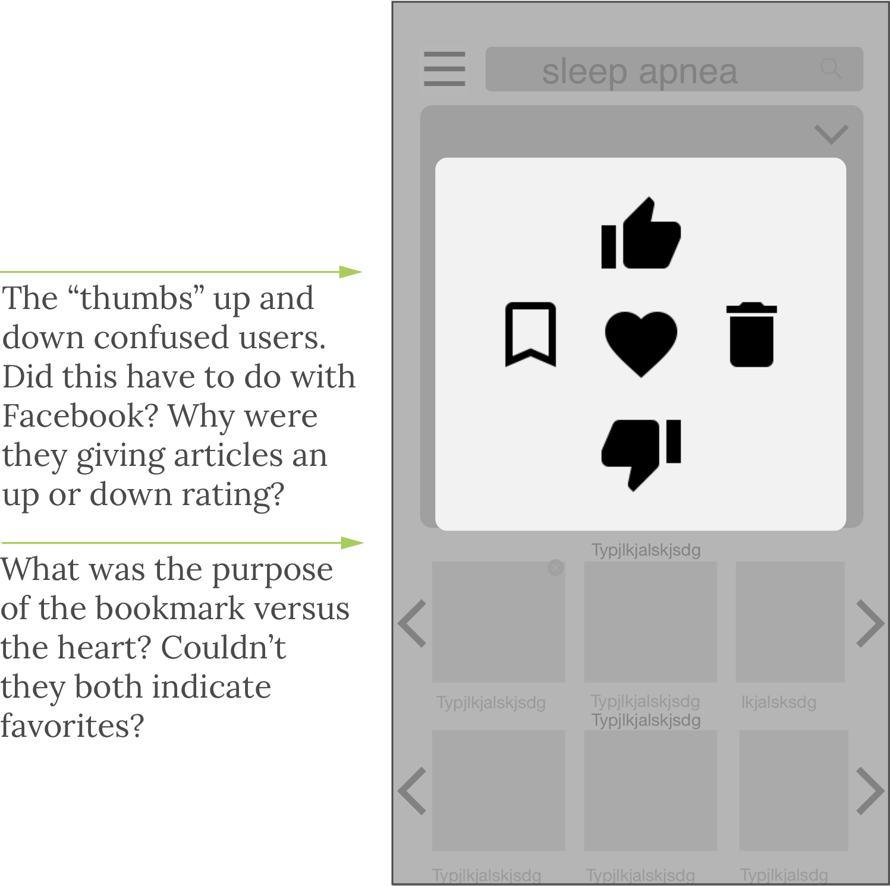
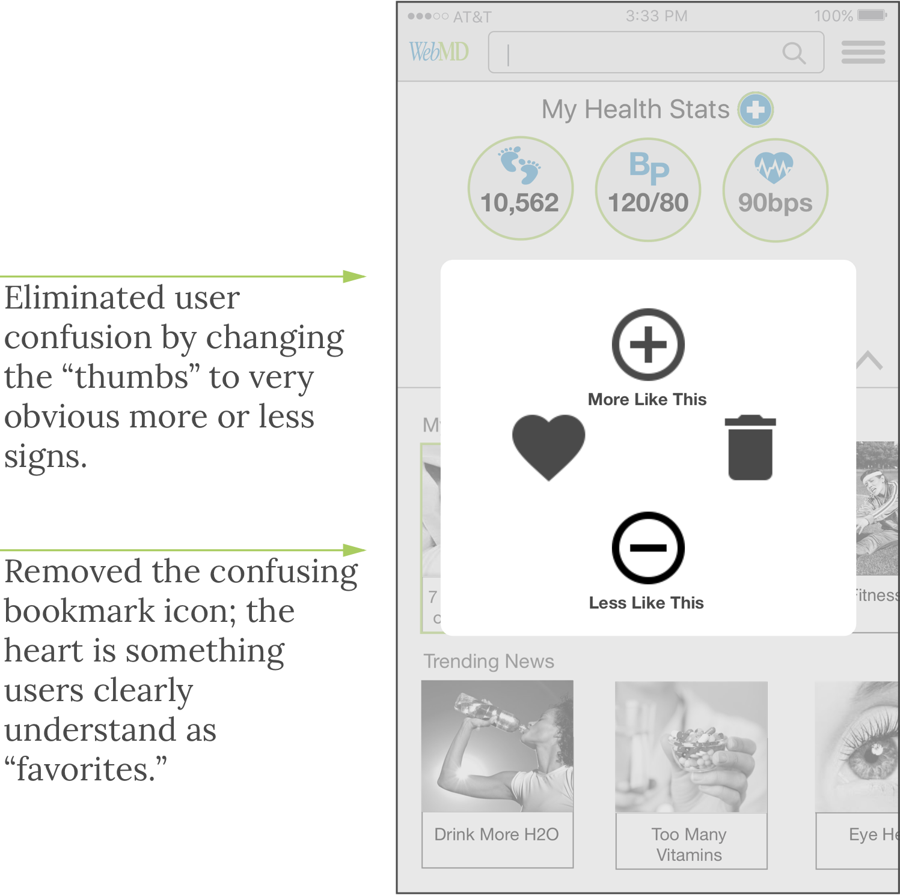

WebMD Strong
Your Healthcare Hub
Biometric-Generated News Native App & Companion Wearable
Our Challange
WebMD is well known for being a key source of health issues and having a vast amount of content available to its users. However, given growing competition in the online health space, the management believes that users want a more personalized experience, which they believe should lead to more frequent (and maybe even daily) engagement as well as better retention.
My Role
As part of a class project, our team of three worked collaboratively through the design process for 2 weeks to design the concept and prepare basic wireframes. My most prominent roles were in: ideation, concept creation, wearable prototyping, survey and interview question development, interviews, design, task analysis, user testing, presentation creation and delivery.
1
Always Consider the Business Needs & Goals
Increase acquisition and retention
Find a way to encourage daily engagement
2
Extensive Competitive Review
How does WebMD stack up to the competition?
What challenges will new healthcare start-ups create for webMD?
3
In-Depth Understanding of the User
Who is the average WebMD user?
Why do they come to WebMD? Why do they leave?
4
Create an Innovative, Personalized Experience
Would WebMD users be better served by a website redesign or an app?
Would integrating a wearable serve user and business needs?
healthcare information market fragmented & diverse
SWOT
Strengths
- Strong SEO, always at the top of most of healthcare searches
- Easy to understand, uses layman's terms
- Allows people to advocate for themselves with their doctor
Weaknesses
- Perceived as having "fluffy " articles, no definitive answers or statistics
- Main revenue source, ads, deters customer retention
- TMI, too much information, users get lost
Opportunities
- API opportunities with health apps and wearable makers
- A WebMD device co-promoted with wearable maker could help to make WebMD a daily habit
- Could also market wearables on WebMD site
Threats
- Competitors sites (CDC, Mayo) are very well respected sources of healthcare information
- Healthcare start-ups are on the rise: 2,700 on AngelList alone and many more already public
- Fitness wearables continue to expand their data offerings
If you can't beat 'em join 'em.
Instead of seeing competitors as a threat, reach out to them as a partner
No
Yes

What WebMD offers its competitors
What competitors can offer WebMD
Strategic recommendations
Offer something technologically innovative,
test our concept of a wearable with news generated by biometrics
Focus on your strengths, news & information, not product.
Don't build a wearable, co-market and offer APIs
Reduce the clutter,
offer a streamlined app design, limit ads, provide easy "ad exit"
Make WebMD
a trusted"Healthcare Hub" for health news and information from all sources, not just WebMD

Survey results
WebMD serves a diverse group of clients all of which have different health information needs, socioeconomic status, technological capabilities, and demographics - a difficult audience to please.
While experience with WebMD varied for our survey takers, what our initial research made clear is that WebMD is far from our goal of making visitorship a daily habit.

Other interview insights
Wants alerts

Warren, 95
Retired Forester
"I could see using one in the future, especially if it would alert someone automatically if I had a stroke or remind me to take my meds, I wouldn't forget like I do now."
Get's lost

Nancy, 68
Retired Teacher
"WebMD can be so frustrating. I will be clicking on news for high blood pressure and then I am in some ad. I don't know how I got there, and now I am lost in the site."
Changes preferences often

Alyshia, 40
Business Owner
"I need to modify my preferences on-the-go. I already had my baby I don't want to get pregnancy articles anymore."
Loves apps with personalized news

Sarah, 20
Store Manager
"A healthcare app with info only important to me. That would be so cool."
Initial research findings
Lot's of people go to WebMD (because of SEO), but they go infrequently and don't stay long
People get lost in the sea of health information, often scary, ad-filled, and not pertinent to them or their family
Validated WebMD's concerns that people need a more personalized experience
People are comfortable using apps for health information and are also very interested in trying wearables
WebMD needs to implement a really innovative idea to take a ~4x per year visitor to someone that uses WebMD as part of a daily habit
Our affinity map
This brainstorming tool helped us to outline the users key
pain points: too many ads, alarming content, getting lost, etc.

Our empathy map
Allowed us to get into the mindset of those using WebMD:
they are often sick, scared, and worried

Storyboard
Demonstrates interactions with our proposed app and wearable,
plus my stick figures are legendary

WebMD has a widely varied clientele, that can be difficult to please
|
Location: Long Island, NY Marital Status: Married Family: daughter 47, grandson, 9 Occupation: Retired scientist |
|
|
Goals - Learning how to counteract old age - Learning about her husband's heart condition - Manage her blood pressure |
Pain Points - Repeated searches for the same disease - Accidently getting funneled into ads - Symptom checkers alarming suggestions |
|
Location: Austin, TX Marital Status: Single Family: parents and grandparents Occupation: Developer |
|
|
Goals - Quickly read articles on-the-go - Keep up to date on fitness news - Follow articles on diabetes for his grandmother |
Pain Points - Too much time needed to search through vast content - Articles that lack credible sources - Heavy/shock articles on heavy diseases |
|
Location: Danville, CA Marital Status: Married Family: husband, 45, one child, 4 Occupation: Teacher |
|
|
Goals - Keep herself healthy - Keep her family healthy - Changing preferences as her child grows |
Pain Points - Inaccurate or ambiguous information - Repeat searches for same illness - Too much "junk" on the page |
The WebMD site is complex, but for the user's the problem is simple:
1
Perceived lack of quality and "trust" in WebMD
Content is fluffy, often scary, and ad-filled
2
Getting lost in a sea of generic healthcare information
It's not easy to find only the articles pertinent to them or their family
Must. Have. Ads. Lots. Of. Ads.
Many of our competitors were reluctant to recommend changes to WebMD website because of its ads. Ads are the main revenue stream for the site (although not for the company overall). But we think they can't see the forest for the trees.
Average annual views now

Potential annual views with app & wearable

With our approach people would be much more likely to come to WebMD and stay longer. Therefore, reducing the ads on the app, even drastically, won't mean reduced ad visibility, the chance of users viewing an ad will be be much higher.

WebMD will receive a new revenue stream from a co-market wearable
Revenue from additional API agreements (other fitness devices)
Improved user loyalty, less ads, less likely to leave the site, better retention
Change the reputation of WebMD as an outdated and "scarey" site to one of innovation an cutting edge technology and user experience
Potential new revenue stream, selling user data
Healthcare Hub
Native app that offers serves as your hub trusted news from all available healthcare sources based on your preferences. You only see health news important to you and your family.
Wearable
Co-marketed original design companion wearable (and API for other wearables) that generates news and alters from your own biometrics
Healthcare Hub
All your healthcare information, all sources, all in one place
Simple quick on-boarding
Easy to used preferences, help you to choose topics
Changes preferences quickly on-the-go
Regular medication alerts
Wearable
Generate real-time health and fitness data (steps, HR, BP...)
Real-time news & info relevant to your physical condition
Read urgent news, texts, or social media right on your wrist
Real-time alerts due to changes in your physical condition
1
Use of on-boarding
Outcomes: complete the on-boarding or skip ahead before finished
2
Change your preferences on-the-go
Outcomes: change preferences at the news feed level, articles, or profile
3
Successfully search for sleep apnea article on app
Outcomes: 2+ ways to find an article
4
Read an article
Outcomes: click into read an article, scroll to read the article, select a new article, provide feedback on the article
5
Identifying biometric-generated articles from feed
Intro to quick on-boarding
Choose your news preferences
Easy wearable set up
App Home Page
Modify preferences on-the-go
Article view
Usability testing: user feedback
On-Boarding
"I always skip these things, but this was so simple and fast I forgot to skip it."
Landing Page
"I love this! You have my steps and all my personal news at the top, but still trending articles to keeps me up the latest health news.
On-The-Go Preferences
"I don't understand the difference between 'heart' and 'bookmark'? And what do those thumbs up mean? Is this facebook or a health site?
Article Scroll
"Oh those arrows on the picture are to scroll articles? I would never get that. I thought it was just for pictures
Read Article
This is super easy to read, just scroll down. But I would put these [article feedback] icons higher up so I don't have to scroll through the whole article first to use them?
Biometrics Icon
"This icon is too happy I am coming here because I am sick or have a health concern. I don't want to have his happy face staring back at me."
Our final interactive wireframes encompass a number of features, including> a quick and easy on-boarding, clear-simple-personalized newsfeed, fitness/biometric data, and an easy search.
Initial tested draft vs medium fidelity
Landing Page Tested
Landing Page, New Draft
Article View Tested
Article View, New Draft
Tested Feedback
Feedback, New Draft
- 1-2 rounds of user testing to refine low-fidelity design
- A/B testing to choose the best landing page
- Finalized and polish design into a full color mock up
- Develop co-marketing agreements for novel wearable with an established maker (e.g. Garmin)
- Finalize the design of co-marketed wearable
- Continue to add other fitness wearables partners via APIs
- Explore partnerships with other, establish, trusted sources of healthcare information
- Continue to expand into new revenue streams: reciprocal links, ads on partner sites, or other joint ventures.